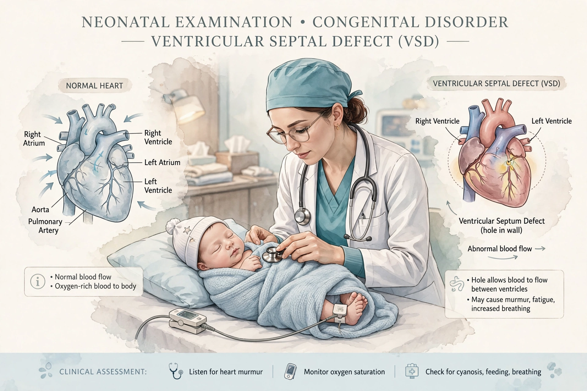

A birth defect, also known as a congenital disorder, is an abnormal condition that is present at birth regardless of its cause. Birth defects may result in disabilities that may be physical, intellectual, or developmental, ranging from mild to severe. Birth defects are divided into two main types: structural disorders, in which problems are seen with the shape of a body part, and functional disorders, in which problems exist with how a body part works. Functional disorders include metabolic and degenerative disorders.
| Birth defect | |
|---|---|
 | |
| Synonyms | Congenital disorder, congenital anomaly |
| Frequency | ~3% of newborns (US estimate) |
| Specialty | Medical genetics, pediatrics |
Known causes include genetic factors (single-gene disorders, chromosomal abnormalities such as Down syndrome), infections during pregnancy (rubella, Zika virus, cytomegalovirus), maternal conditions such as diabetes, nutritional deficiencies — notably folate deficiency, which causes neural tube defects — and exposure to teratogens such as alcohol (fetal alcohol spectrum disorders), certain medications, and thalidomide. In many cases the cause is unknown or multifactorial.
Folic acid supplementation before conception and in early pregnancy greatly reduces neural tube defects, and is the basis of food fortification programs in many countries. Screening includes prenatal ultrasound, maternal serum screening, non-invasive prenatal testing, and newborn screening panels. Rubella vaccination before pregnancy prevents congenital rubella syndrome.
The US Centers for Disease Control and Prevention estimates that birth defects affect about 1 in every 33 babies born in the United States each year. Worldwide, an estimated 7.9 million children are born annually with a serious birth defect of genetic or partially genetic origin, and birth defects are a leading cause of infant mortality in developed countries.
The term "congenital" means present at birth; not all congenital conditions are genetic, and not all congenital conditions are inherited. The study of birth defects is called teratology or dysmorphology.
From Wikipedia, the free encyclopedia (recreated from memory).